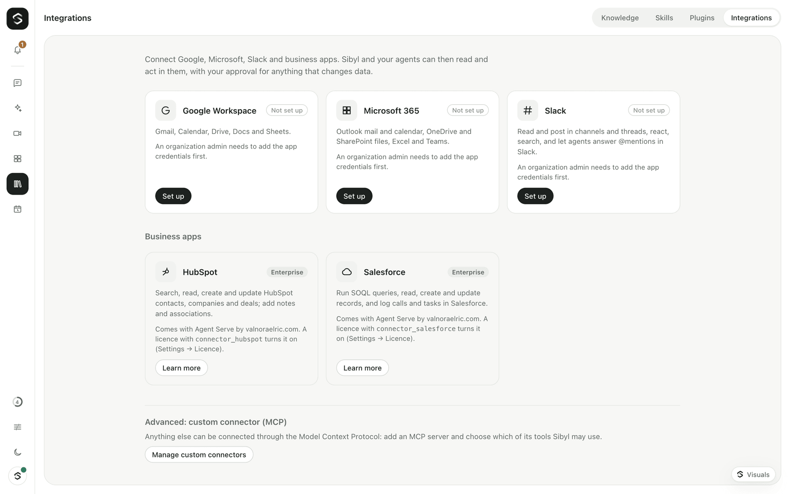

Integrations (native connectors)
Sibyl connects to a short list of business apps so the assistant can use them for you: Google Workspace, Microsoft 365 and Slack (open source), and HubSpot and Salesforce (Agent Serve). Anything else can be added as a custom connector through MCP (Integrations → Advanced).

Connectors bundle no prompts. Each one is a list of actions the brain can call
(for example google_gmail_search or microsoft_outlook_send). Actions that
change something (write) always show an approval card first; actions that
send, post or share are marked as high-risk on that card.
- How it works
- Google Workspace
- Microsoft 365
- Slack (agents in Slack and Teams: Agents in Slack and Microsoft Teams)
- HubSpot (Enterprise)
- Salesforce (Enterprise)
- Scopes per action group
- Security
- Configuration reference
- API
How it works
- An organization owner or admin sets up the app once (Integrations →
connector → Setup guide): register an OAuth app with the vendor using
your organization's own account, add the redirect URI Sibyl shows, and paste
the client ID and client secret. They are stored as secrets in Sibyl's
encrypted vault (
GOOGLE_OAUTH_CLIENT_ID,GOOGLE_OAUTH_CLIENT_SECRET, …). Admins can also switch action groups off for everyone (for example "Gmail: send"). - People connect their accounts. Just me creates a personal
connection that only you can see and use (
integrations.connect_personal, members and up). Whole workspace creates a shared connection everyone in the workspace can use (integrations.connect_shared, workspace admins). You pick which action groups Sibyl may use; Sibyl asks the vendor only for the scopes those groups need. - The assistant uses them. A connector's tools are offered to a person only
when a connection they may use exists (
integrations.use) with that action group on. A personal connection wins over the workspace's shared one. Routines (no person attached) use the workspace's shared connections.
Status is live: when a token can't be refreshed (the person revoked access, the password changed, the admin removed the app), the connection shows Reconnect and its tools stop being offered until it is reconnected.
The redirect URI is https://<your gateway>/api/connectors/oauth/callback.
Set SIBYL_PUBLIC_GATEWAY_URL when the gateway sits behind a proxy so the URI
is built from the public address; otherwise it is derived from the request.
Google Workspace
Gmail, Calendar, Drive, Docs and Sheets.
- Open the Google Cloud console and create (or choose) a project for Sibyl.
- APIs & Services → Library: enable the Gmail API, Google Calendar API, Google Drive API, Google Docs API and Google Sheets API (only the ones you will use).
- APIs & Services → OAuth consent screen:
- User type Internal if only your Google Workspace domain will connect (no Google review needed), otherwise External.
- Add an app name and support e-mail.
- Add the scopes of the action groups you plan to allow (table below). External apps that request restricted scopes (Gmail, Drive) need Google's verification before people outside your test-user list can connect.
- APIs & Services → Credentials → Create credentials → OAuth client ID, application type Web application. Under Authorized redirect URIs add the redirect URI shown in Sibyl. Create.
- In Sibyl: Integrations → Google Workspace → Setup guide → paste the Client ID and Client secret → Save.
- Connect: Continue to Google, pick the account, approve.
Sibyl asks Google for offline access (a refresh token) and keeps earlier grants when you turn on more groups later. Removing a connection revokes the token at Google.
Microsoft 365
Outlook mail and calendar, OneDrive and SharePoint files, Excel and Teams (Microsoft Graph).
- Open the Microsoft Entra admin center → App registrations → New registration.
- Name: Sibyl. Supported account types:
- Accounts in any organizational directory (Multitenant) — the default;
people from other Microsoft 365 organizations (customers, partners) can
connect too. Leave Sibyl's Tenant setting at
common(ororganizationsto exclude personal Microsoft accounts). - Single tenant — only your organization. Set Sibyl's Tenant setting
to your tenant ID or domain (
contoso.onmicrosoft.com).
- Accounts in any organizational directory (Multitenant) — the default;
people from other Microsoft 365 organizations (customers, partners) can
connect too. Leave Sibyl's Tenant setting at
- Redirect URI: platform Web, value: the redirect URI shown in Sibyl. Register.
- Certificates & secrets → New client secret. Copy the secret's Value (it is shown once). Note its expiry: renew it in Entra and paste the new value in Sibyl before it expires.
- API permissions → Add a permission → Microsoft Graph → Delegated
permissions: add
User.Read,offline_access,openid,email,profileand the permissions of the action groups you will use (table below). In tenants that restrict user consent, click Grant admin consent. For a multi-tenant app, each customer tenant's admin may need to consent once (the first person to connect from that tenant is prompted). - In Sibyl: Integrations → Microsoft 365 → Setup guide → paste the Application (client) ID and the secret Value → set the tenant → Save.
Microsoft has no endpoint to revoke a single grant: removing a connection deletes its tokens in Sibyl; people can also remove the app at https://myapps.microsoft.com.
Slack
Channels, threads, posting, reactions and search, plus agents that answer @mentions in channels and notifications by direct message. Install it with your organization's own Slack app; the full manifest, scopes and events are in Agents in Slack and Microsoft Teams.
- Open Your Apps → Create New App → From a manifest, pick your Slack workspace and paste the manifest.
- Replace the two example URLs with the Redirect URI and the Events
Request URL shown in Sibyl (both must be public HTTPS addresses: set
SIBYL_PUBLIC_GATEWAY_URL). - Basic Information → App Credentials: paste the Client ID, Client Secret and Signing Secret in Sibyl (Integrations → Slack → Setup guide) → Save.
- Continue to Slack and install the app for the whole workspace.
Removing the connection revokes the bot token (auth.revoke).
HubSpot (Enterprise)
Needs a licence with connector_hubspot (see LICENSING.md).
Without it the card shows Enterprise and no HubSpot tools exist.
Actions: search, get, create and update contacts, companies and deals, add notes (attached to contacts, companies and deals), and associate records.
Two ways to connect:
- Private app token (simplest). In HubSpot: Settings → Integrations →
Private apps → Create a private app, scopes
crm.objects.contacts.read/write,crm.objects.companies.read/write,crm.objects.deals.read/write. Copy the access token and choose Use a token in Sibyl. The token is checked against HubSpot, then stored encrypted. - OAuth. In a HubSpot developer account create an app, add Sibyl's redirect
URI and the scopes above (plus
oauth), then paste its client ID and secret in Sibyl's setup guide. Removing a connection deletes the refresh token at HubSpot.
Salesforce (Enterprise)
Needs a licence with connector_salesforce.
Actions: SOQL query (read-only, SELECT only, follows pagination), get,
create and update records of any object, and log activity (a completed
call or a to-do, as a Task linked to a contact/lead and/or a record).
- In Salesforce Setup → App Manager → New Connected App (or New External Client App).
- Enable OAuth Settings. Callback URL: the redirect URI shown in Sibyl.
- Scopes: Manage user data via APIs (api), Perform requests at any time (refresh_token, offline_access), Access unique user identifiers (openid). Tick Require Proof Key for Code Exchange (PKCE).
- Save, then Manage Consumer Details: copy the Consumer Key and Consumer Secret into Sibyl (client ID / client secret).
- Login host:
login.salesforce.com(production),test.salesforce.com(sandboxes) or your My Domain (acme.my.salesforce.com).
The API calls go to the instance URL Salesforce returns at sign-in; Sibyl only
accepts Salesforce hosts (*.salesforce.com, *.force.com, …) there.
Scopes per action group
Every connection also requests the sign-in basics (Google: openid email profile; Microsoft: openid profile email offline_access User.Read).
Default groups are on for new connections; the others are opt-in.
Google Workspace
| Action group | Tools | Scope (https://www.googleapis.com/auth/…) |
Default |
|---|---|---|---|
| Gmail: search and read | google_gmail_search, google_gmail_read_message, google_gmail_read_thread |
gmail.readonly |
on |
| Gmail: drafts | google_gmail_create_draft |
gmail.compose |
on |
| Gmail: send | google_gmail_send (high risk) |
gmail.send |
off |
| Gmail: labels and archive | google_gmail_modify_labels |
gmail.modify |
off |
| Calendar: read | google_calendar_list_events, google_calendar_find_free_time |
calendar.readonly |
on |
| Calendar: create and update | google_calendar_create_event, google_calendar_update_event |
calendar.events |
on |
| Drive: search and read | google_drive_search, google_drive_read_file |
drive.readonly |
on |
| Docs: read | google_docs_read |
documents.readonly |
on |
| Docs: create and append | google_docs_create, google_docs_append |
documents |
off |
| Sheets: read | google_sheets_read_range |
spreadsheets.readonly |
on |
| Sheets: append and update | google_sheets_append_rows, google_sheets_update_range |
spreadsheets |
off |
Microsoft 365 (Microsoft Graph, delegated)
| Action group | Tools | Permissions | Default |
|---|---|---|---|
| Outlook: search and read | microsoft_outlook_search, microsoft_outlook_read_message |
Mail.Read |
on |
| Outlook: drafts | microsoft_outlook_create_draft |
Mail.ReadWrite |
on |
| Outlook: send | microsoft_outlook_send (high risk) |
Mail.Send |
off |
| Calendar: read | microsoft_outlook_list_events, microsoft_outlook_find_free_time |
Calendars.Read |
on |
| Calendar: create and update | microsoft_outlook_create_event, microsoft_outlook_update_event |
Calendars.ReadWrite |
on |
| OneDrive & SharePoint: search and read | microsoft_onedrive_search, microsoft_onedrive_read_file, microsoft_excel_read_range |
Files.Read.All, Sites.Read.All |
on |
| Excel: update | microsoft_excel_update_range |
Files.ReadWrite |
off |
| Teams: list teams and channels | microsoft_teams_list_teams, microsoft_teams_list_channels |
Team.ReadBasic.All, Channel.ReadBasic.All |
on |
| Teams: post messages | microsoft_teams_post_message (high risk), microsoft_teams_reply_to_message |
ChannelMessage.Send |
off |
| Teams: read channel messages | microsoft_teams_read_channel, microsoft_teams_read_thread (and agents answering in Teams) |
ChannelMessage.Read.All (admin consent) |
off |
| Teams: chats | microsoft_teams_list_chats, microsoft_teams_post_chat_message (high risk) |
Chat.ReadWrite |
off |
Slack (bot token; search uses the person's user token)
| Action group | Tools | Scopes | Default |
|---|---|---|---|
| Channels: list and read | slack_list_channels, slack_read_channel, slack_read_thread |
channels:read, groups:read, channels:history, groups:history, users:read |
on |
| Post and reply | slack_post_message (high risk), slack_reply_in_thread |
chat:write |
on |
| Reactions | slack_add_reaction |
reactions:write |
on |
| Agents in channels | (agents answer @mentions; see slack-and-teams.md) | app_mentions:read, chat:write, chat:write.customize, channels:history, groups:history |
on |
| Notifications by direct message | (Slack notifications) | users:read, users:read.email, im:write, chat:write |
on |
| Search messages (as you) | slack_search_messages |
user scope search:read |
off |
HubSpot (Enterprise)
| Action group | Tools | Scopes |
|---|---|---|
| CRM: search and read | hubspot_search, hubspot_get |
crm.objects.{contacts,companies,deals}.read |
| CRM: create, update, notes | hubspot_create, hubspot_update, hubspot_add_note, hubspot_associate |
crm.objects.{contacts,companies,deals}.write |
Salesforce (Enterprise)
| Action group | Tools | Scopes |
|---|---|---|
| Query and read | salesforce_query, salesforce_get_record |
api |
| Create, update, log activity | salesforce_create_record, salesforce_update_record, salesforce_log_activity |
api |
If you turn on a group whose scopes the connection was not granted, the connection lists it under Reconnect to approve; its tools stay off until you reconnect.
Security
- OAuth 2.0 authorization code + PKCE (S256) with your organization's own
app. The
stateparameter is 256 random bits, single use, valid ten minutes, and bound to the signed-in person and their browser session: a callback link carrying someone else's code is refused. - Tokens never leave the gateway. Access and refresh tokens (and API keys)
are encrypted with AES-256-GCM using the secrets vault's master key
(
SIBYL_SECRET_KEY/data/secret.key), stored apart from named secrets so neither the Secrets panel nor theapi_requesttool can reach them. They are never sent to the browser, the WebSocket, logs or the model; any echo in an API response is redacted before the model reads it. - Credentials only go to the vendor's own hosts. The one HTTP client adds them only for the connector's API hosts (and Salesforce instance URLs on Salesforce domains); redirects are not followed.
- Client secrets are vault secrets bound to the vendor's token host.
- Refresh happens automatically shortly before expiry and once after a
401; transient failures back off exponentially; a revoked grant marks the connection Reconnect. - Calls are logged (connector, tool, connection id, status, duration) — never inputs, outputs or credentials. Connectors make no model calls of their own and are not metered.
- Approvals. Write actions need the person's approval in the chat (and
tools.write); sending, posting and sharing are flagged as high risk.
Configuration reference
| Variable | What it does |
|---|---|
SIBYL_PUBLIC_GATEWAY_URL |
Public base URL of the gateway (https://sibyl.example.com), used for the OAuth redirect URI. |
SIBYL_GOOGLE_CLIENT_ID, SIBYL_GOOGLE_CLIENT_SECRET |
Google app credentials from the environment (the vault, set in the UI, takes precedence). |
SIBYL_MICROSOFT_CLIENT_ID, SIBYL_MICROSOFT_CLIENT_SECRET, SIBYL_MICROSOFT_TENANT |
Microsoft app credentials and tenant (common by default). |
SIBYL_SLACK_CLIENT_ID, SIBYL_SLACK_CLIENT_SECRET, SIBYL_SLACK_SIGNING_SECRET |
Slack app credentials and signing secret from the environment (the vault, set in the UI, takes precedence). |
SIBYL_HUBSPOT_CLIENT_ID, SIBYL_HUBSPOT_CLIENT_SECRET |
HubSpot OAuth app (Enterprise). |
SIBYL_SALESFORCE_CLIENT_ID, SIBYL_SALESFORCE_CLIENT_SECRET, SIBYL_SALESFORCE_LOGINHOST |
Salesforce Connected App and login host (Enterprise). |
SIBYL_CONNECTORS=false |
Turn native connectors off. |
Connectors need the secrets vault's master key; without it the Integrations screen explains that they are unavailable.
API
All routes need sign-in and act in the workspace from x-sibyl-workspace.
| Route | Permission |
|---|---|
GET /api/connectors |
integrations.use |
POST /api/connectors/:id/connect {scope, groups?, credentials?} |
integrations.connect_personal; scope: "workspace" also integrations.connect_shared |
PATCH /api/connectors/connections/:id {groups} |
owner of a personal connection; integrations.connect_shared for shared |
POST /api/connectors/connections/:id/test, /reconnect |
as above |
DELETE /api/connectors/connections/:id |
as above (revokes at the vendor) |
PUT /api/connectors/apps/:id {clientId?, clientSecret?, settings?, allowedGroups?, secrets?} |
org.settings |
DELETE /api/connectors/apps/:id |
org.settings |
GET /api/connectors/oauth/callback |
the single-use state of the same person and session |
WebSocket: send integrations.request; the gateway answers with
integrations.state and pushes it again whenever a connection changes.